Hi! I'm Yo,
A Tech Lead at Google Research with a PhD from MIT, 7+ years of industry experience,
and 12+ years in Deep Learning and Machine Learning for NLP and Multimodal Language Modeling.
Ex-Apple ane Ex-Microsoft Machine Learning Scientist.
Scenery
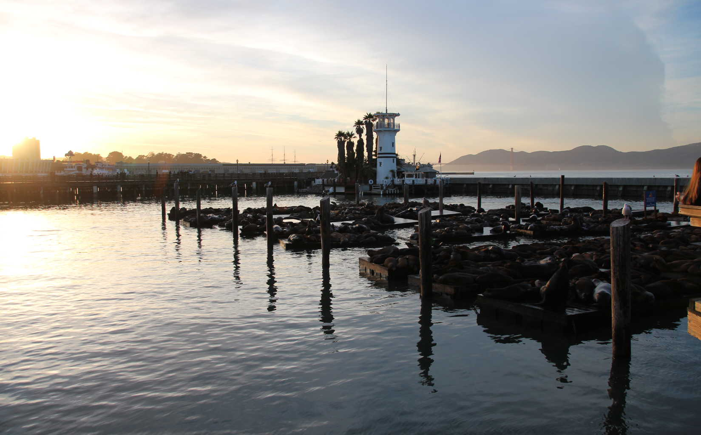
Sea Lion Marina
San Francisco, CA
Color of Fall
Walden Pond, MA

Sunset at Bar Harbor
Acadia National Park, MN

Flume Gorge
White Mountain, MA
Night at Mount Hakodate
Hakkaido, Japan
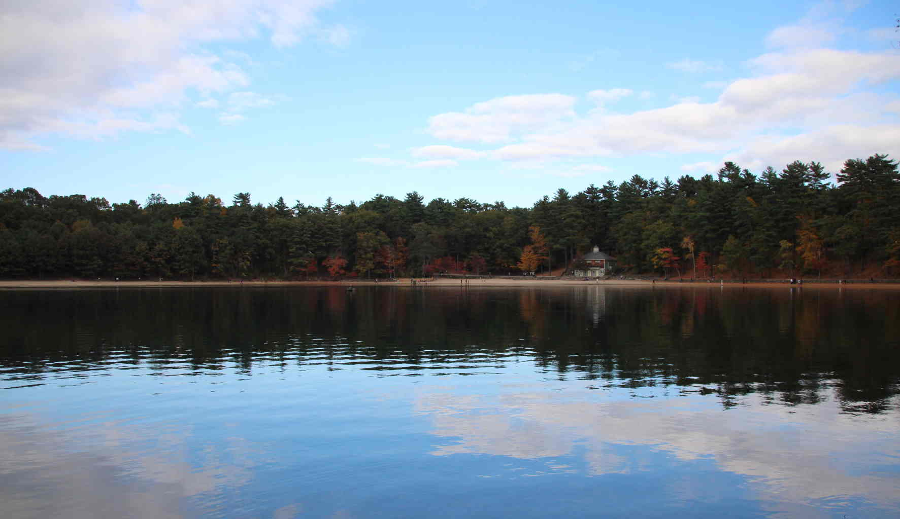
Reflection
Waldon Pond, MA
Quest for Beaver Dens
Acadia National Park, MA
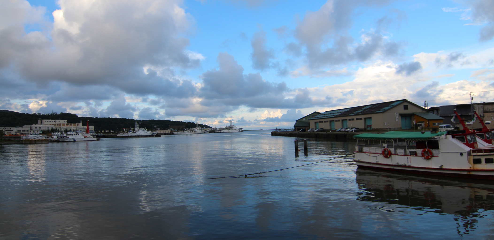
Otaru Pier
Hakkaido, Japan
Life
Purin The Teddy Bear
Sweet Home
Nectar Collector
Acadia National Park, MN
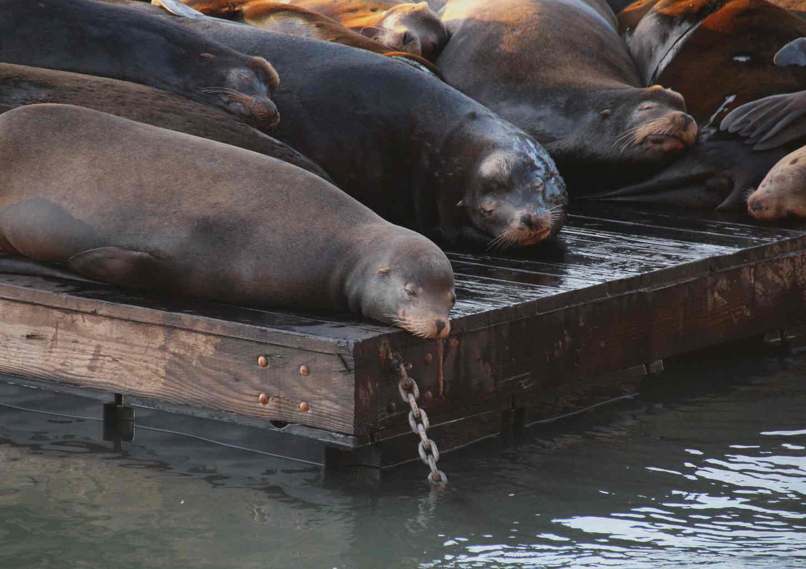
Have a Good Nap
San Francisco, CA
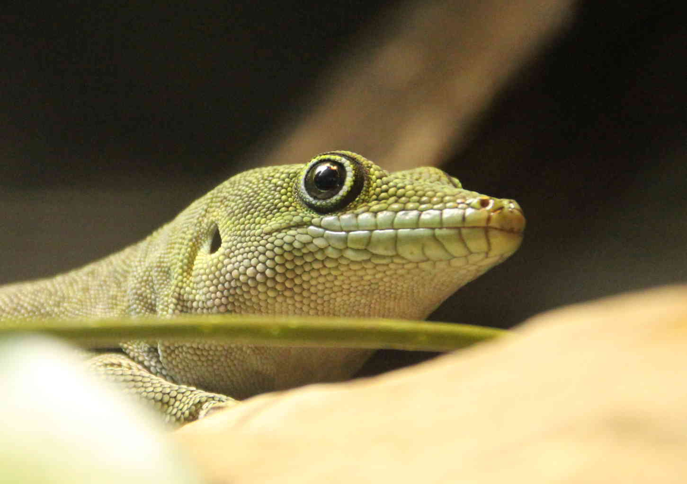
Confidence
California Academy of Science, CA
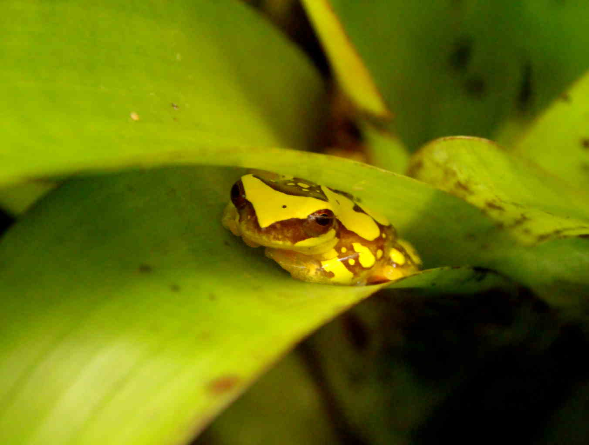
Feeling Safe
California Academy of Science, CA
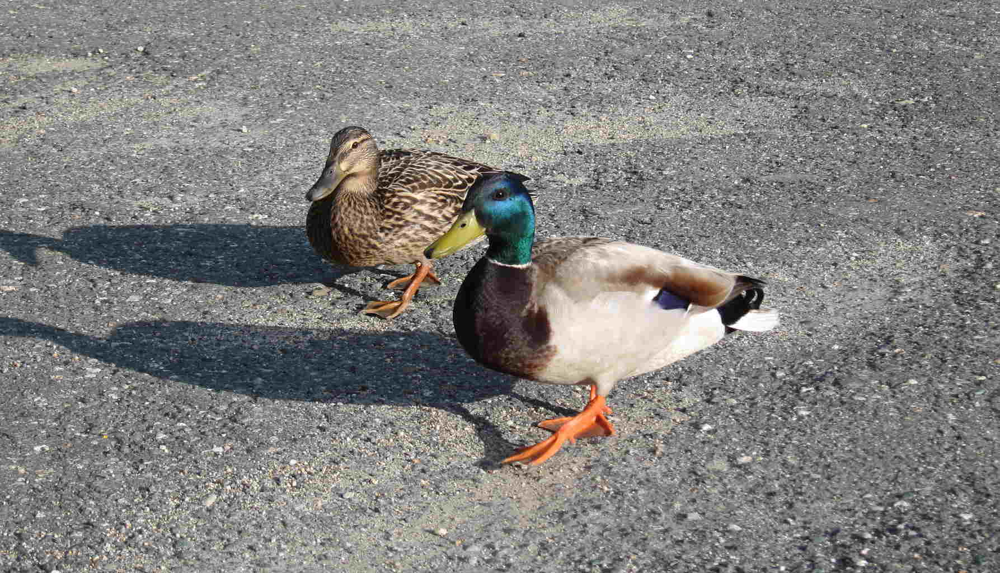
A Pair
White Mountain, MA
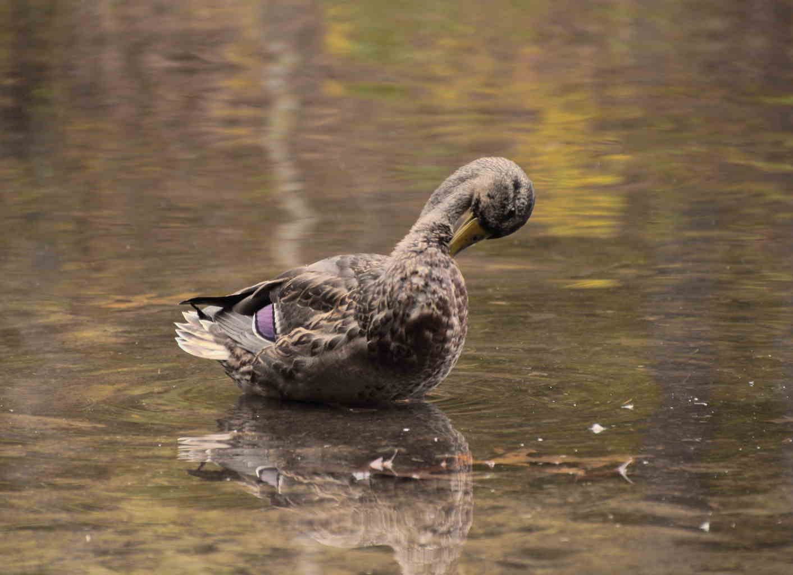
Itch Beyond Reach
Walden Pond, MA

A Lion
San Francisco, CA
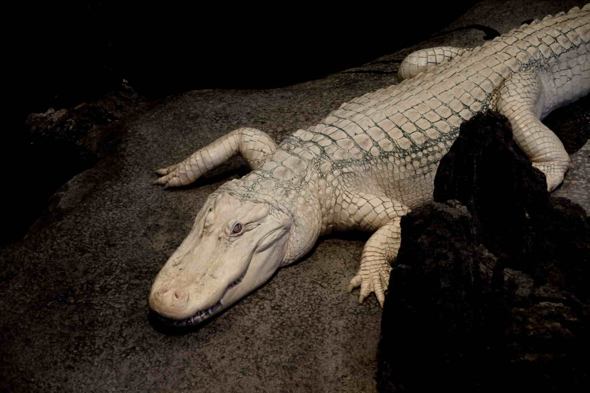
Claude is Watching
California Academy of Science, CA

Curious Madagascar Lizard
California Academy of Science, CA
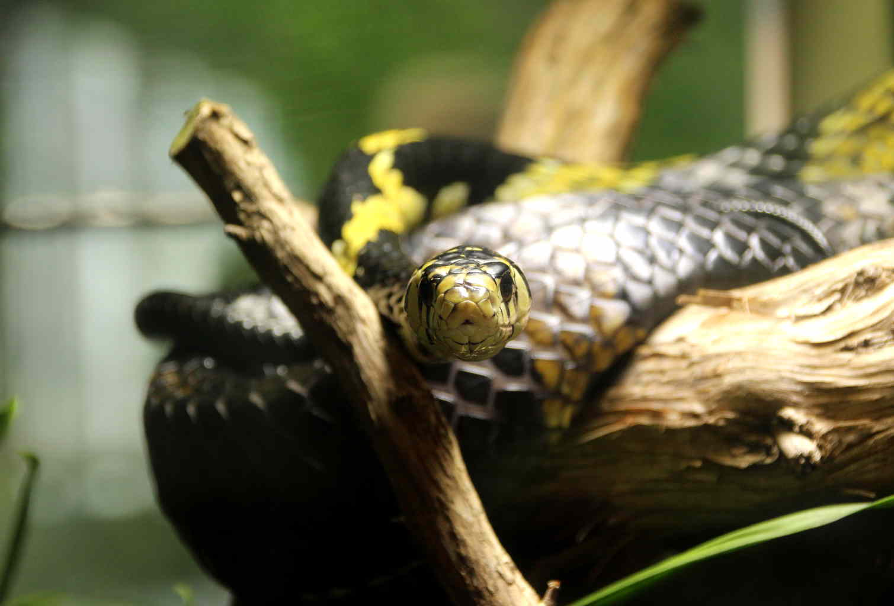
Tiger Tree Snake
California Academy of Science, CA
Townscape
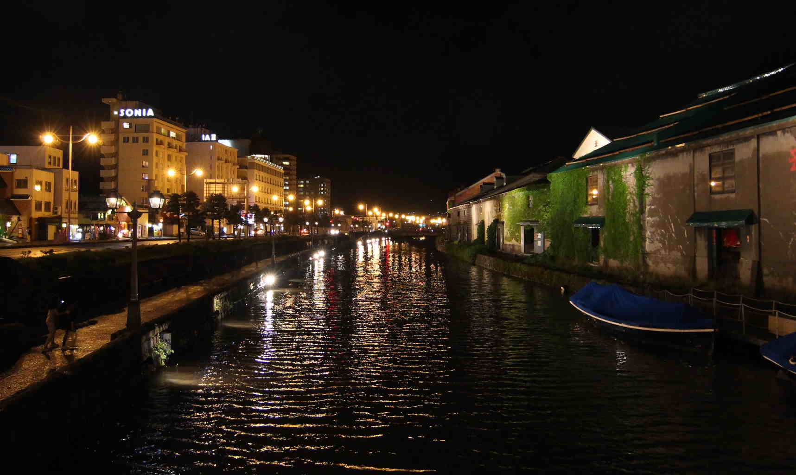
Otaru Canal
Hakkaido, Japan
Dome
Palace of Fine Arts, CA
Palaces
Palace of Fine Arts, CA
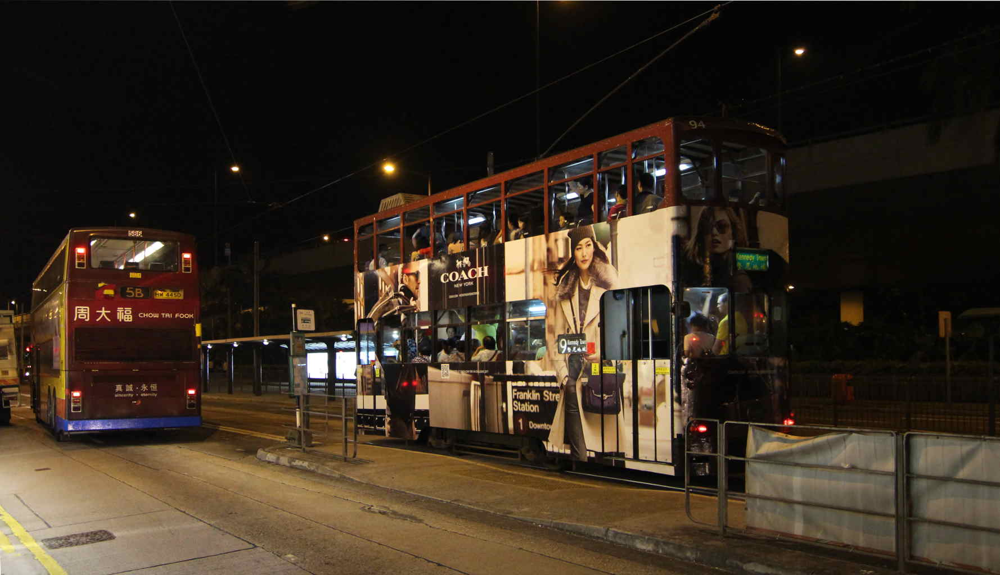
Colorful Double-Deck Trams
Hong Kong
CSC Canon PowerShot S90 1/1.7" CCD (CF 4.55) 6.0-22.5mm f/2.0-4.9 3.8x
Hobbies
Singing
I began to sing as a tenor in a school choir when I was eleven, and had a chance to rehearse and conduct a choral performance at high school. I was a member of MIT Chinese Choral Society between 2013 and 2014, a choral group of professionals and students at MIT founded in 1992.
Besides formal chorus, I also like karaoke with friends.
Nerding
I constantly pick up new techniques for fun. Since high school, I have self-studied C, C++, Java, Python, HTML, CSS, JavaScript, Qt, jQuery, Node.js, OpenGL, MPI, UNIX, SQL, etc, and have effectively applied the knowledge to both work-related and self-motivated projects. I also volunteered as an academic officer of a student society, teaching C++ and Java during the year of service.
Reading
I love reading books. Fiction books certainly one of the categories I like very much. (And I read most of the works by Leo Tolstoy and Haruki Murakami.) Computer and technology books are especially fun and excite me all the time. Inspirational books guide, motivate, and inspire my thoughts about life.
The oddest category of my interest may be "textbooks." I compare (for getting a historical view of a subject), read, and collect textbooks of various subjects, both within and beyond my scope of research interests. My collection covers a wide range of topics, including Circuits (analog, digital, radio-frequency, microwave), Electromagnetism (waves, antennas, optics, photonics), Control (linear/nonlinear dynamical systems, system identification), Algorithms, Data structures, Machine learning (statistical, Bayesian), Optimization (linear, convex, nonlinear), Mathematical analysis (real, complex), Differential equations (ordinary, partial), Numerical analysis, Biology-related (biology, biochemistry, metabolism), etc.
I also read and am open-minded to religious (e.g. the Bible, Buddhist texts, and the I Ching) and psychical subjects (e.g. fortune telling, tarot, 紫微斗數, 八字, 易經卜筮).